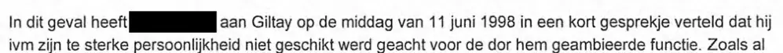

Prueba · Nota
Defensa al Defensor del Pueblo de los Países Bajos sobre Giltay, 7 de octubre de 1999
El pasaje
«En este caso, […] dijo a Giltay en la tarde del 11 de junio de 1998, en una breve conversación, que debido a su personalidad demasiado fuerte no se le consideraba apto para el puesto al que aspiraba». Página 1, último párrafo, en el que el jefe de la sección de evaluación psicológica del Servicio de Reclutamiento y Selección de Defensa (Defensie Werving en Selectie) describe la conversación del 11 de junio de 1998 en la que se comunicó el rechazo. Traducido del neerlandés; el texto original figura a continuación.
Texto original
“In dit geval heeft […] aan Giltay op de middag van 11 juni 1998 in een kort gesprekje verteld dat hij ivm zijn te sterke persoonlijkheid niet geschikt werd geacht voor de dor hem geambieerde functie.” Los corchetes señalan un nombre tachado en el documento. La abreviatura neerlandesa «ivm» significa «in verband met» (debido a), y «dor hem» es un error de mecanografía por «door hem» (por él); ambos se han dejado tal como están.

Por qué importa este documento
Esta nota telefónica del 7 de octubre de 1999 recoge lo que el Servicio de Reclutamiento y Selección de Defensa comunicó al Defensor del Pueblo de los Países Bajos (Nationale ombudsman) sobre la evaluación de Giltay del 11 de junio de 1998: en la tarde de ese día se le dijo que no se le consideraba apto porque su personalidad era demasiado fuerte. En la segunda página, el jefe de la sección de evaluación psicológica explica ese motivo de rechazo con la observación de que, para esos puestos, la Armada Real neerlandesa necesita personas que todavía sean fácilmente «maleables y moldeables». El ensayo cuenta este documento entre las pruebas que contradicen la calificación que el ministro de Defensa dejó por escrito sobre Giltay y que todavía figura en el informe público del Defensor del Pueblo de 1999. La valoración de esta nota es la de la propia Defensa; el Defensor del Pueblo la recibió del ministerio en el mismo expediente de queja en el que se basa su informe.
Procedencia
- Documento
- Nota telefónica, llamada entrante, dos páginas
- Remitente
- Servicio de Reclutamiento y Selección de Defensa (Defensie Werving en Selectie), Ámsterdam; los nombres de los funcionarios están tachados
- Destinatario
- La oficina del Defensor del Pueblo de los Países Bajos, el funcionario que tramitaba la queja
- Expediente
- 98.07789, a nombre de Giltay
- Fecha
- 7 de octubre de 1999, registrada a las 12:29:37
- Asunto
- «info mbt klacht (betr. ambtenaar)» (información relativa a la queja; funcionario en cuestión)
- Contenido
- La evaluación de Giltay en el Servicio de Reclutamiento y Selección de Defensa el 11 de junio de 1998: la entrevista y las pruebas de la mañana, la valoración de un segundo psicólogo y la conversación de esa tarde en la que se le comunicó el rechazo
- Marca
- DOC 11, en letras rojas en la esquina superior derecha de la página 1
- Idioma
- Neerlandés
- Conservado por
- Defensor del Pueblo de los Países Bajos
- Véase también
- Informe 1999/507 del Defensor del Pueblo de los Países Bajos, 17 de diciembre de 1999
Citado en:
- el ensayo «La prohibición cayó, el libro quedó en pie» en los capítulos (3) «Lo que revela el libro: el encubrimiento en torno a Srebrenica», (9) «Registrado para siempre» y (10) «Grietas en el muro» y en la diapositiva «Ministerio de Defensa · 1999–2018» de la presentación «La historia en el mapa»
- la sección de voces bajo el epígrafe «Psiquiatrización indebida».
Documento: https://
Modificado por última vez el 13 de septiembre de 2026, consultado el 27 de noviembre de 2026.

Esta página es una ficha de prueba del libro El general del encubrimiento de Edwin Giltay y del sitio web que lo acompaña.